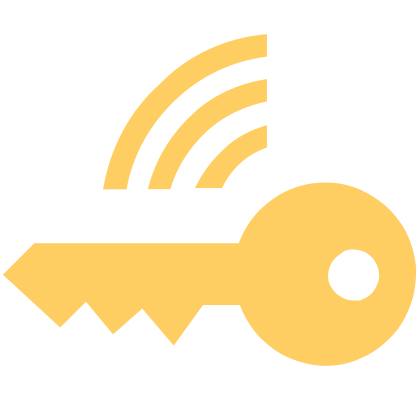

Le verrouillage sans clé ne fonctionne pas
Verrouiller ou déverrouiller le véhicule à l’aide du bouton sur la clé.
Essayer ensuite de déverrouiller ou de verrouiller le véhicule en utilisant les capteurs sur la poignée.
Si le verrouillage sans clé ne fonctionne toujours pas, faire appel à un atelier spécialisé.

Si le véhicule n’est pas déverrouillé pendant une période prolongée, cette fonction peut être désactivée automatiquement en raison de la protection contre la décharge de la batterie 12 V. La fonction n'est disponible que sur la poignée de porte conducteur.
Le contact est mis mais aucune clé n’a été trouvée

allumé
Message indiquant qu’aucune clé n’a été trouvée dans le véhicule.
Insérer la clé dans le véhicule.
ou :
Si la clé se trouve dans le vide-poche avec fonction Phone box où un téléphone est en charge, la clé doit être retirée de cet emplacement.